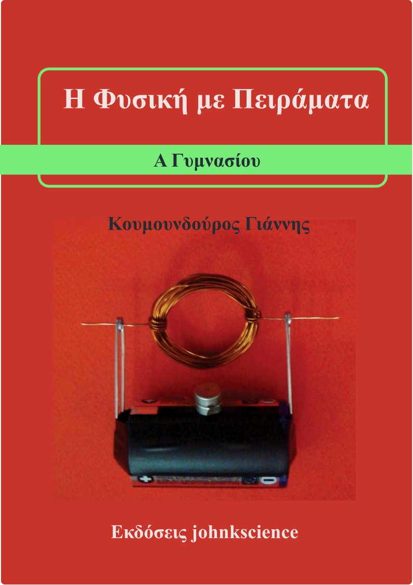
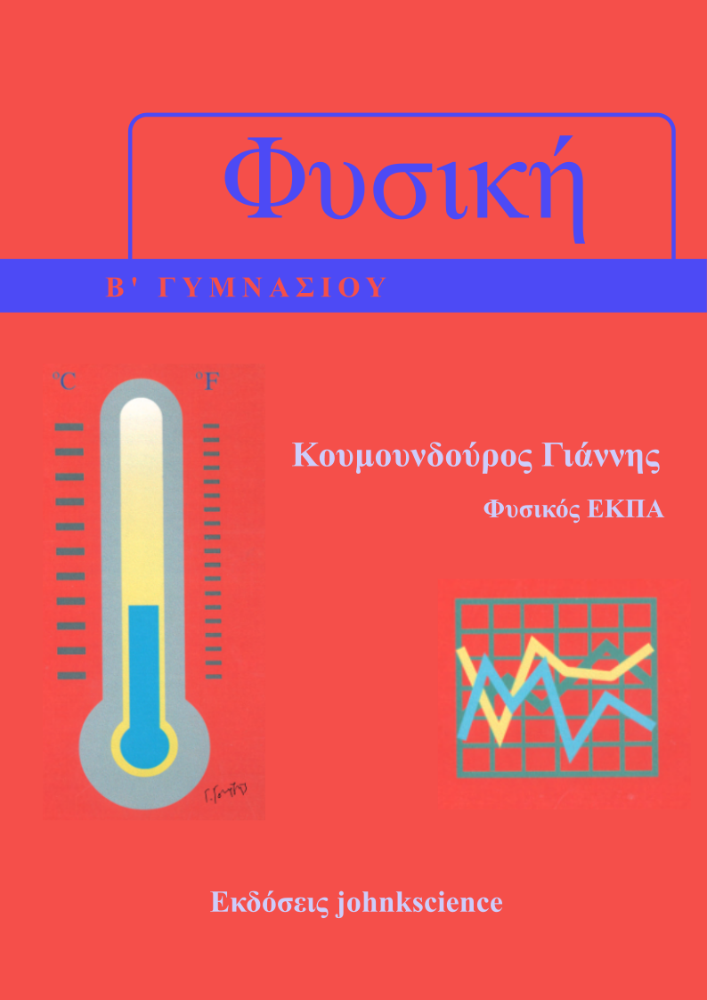
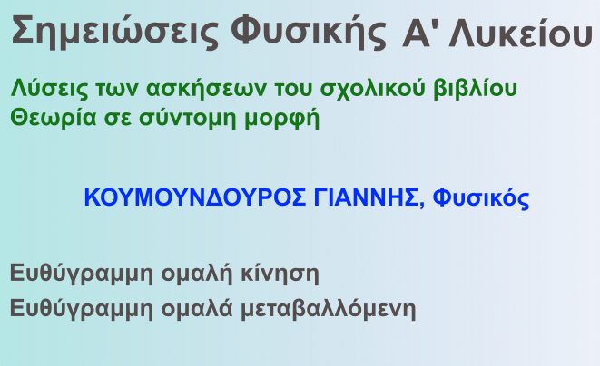
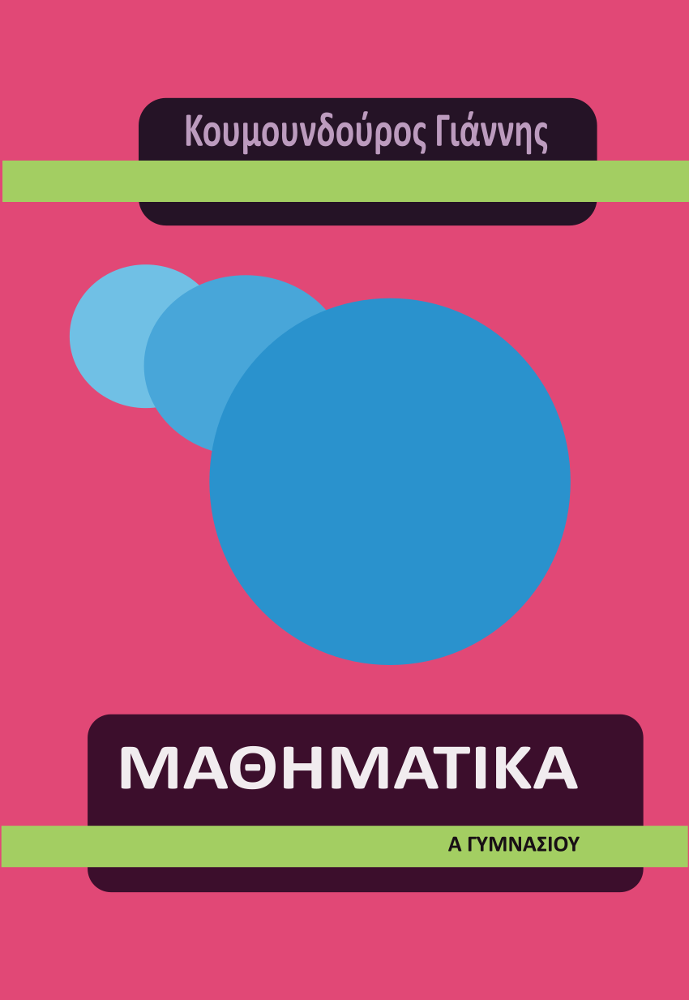

ΣΗΜΕΙΩΣΕΙΣ
Μαθηματικών, Φυσικής και Χημείας, 13 Δεκ, 2023

Γιατί οι σωστές σημειώσεις μπορούν να βοηθήσουν...
Είναι αλήθεια ότι οι καλές σημειώσεις μπορούν να βοηθήσουν τους μαθητές πολύπλευρα. Οι σημειώσεις που είναι ευπαρουσίαστες με σωστά σχεδιασμένο περιεχόμενο προδιαθέτουν ευνοϊκά τον μαθητή ή την μαθήτρια απέναντι στο μάθημα και επεξηγούν στοχευμένα τα δυσνόητα σημεία ώστε παράλληλα με την δια ζώσης διδασκαλία και το σχολικό βιβλίο ο μαθητής να κερδίζει συνεχώς έδαφος στο γνωστικό και ψυχολογικό τομέα.
Φυσική 7x1
A Γυμνασίου, 24 Μαΐου, 2024

Το μάθημα της φυσικής της Α Γυμνασίου είναι η φυσική επέκταση των μαθημάτων των Φυσικών του Δημοτικού. Ο μαθητής/τρια θα γνωριστεί με τον μικροσκοπική δομή της ύλης η οποία είναι η βάση της σύγχρονης φυσικής. Η προσπάθεια αυτή γίνεται μέσα στο εργαστήριο, από μια σειρά πειραμάτων που καλείται να διεξάγει ο διδασκόμενος.
Στο αρχείο που ακολουθεί έχουμε τα φύλλα εργασίας του πρώτου μέρους αυτών των πειραμάτων, διανθισμένα με σχόλια για την ευκολότερη κατανόησή τους.
Θεωρία και Ασκήσεις Α ΓυμνασίουΦυσική 8x1
Β Γυμνασίου, 15 Μαΐου, 2024

Το μάθημα της Φυσικής ξεκινά στην Α Γυμνασίου, αλλά ουσιαστικά, στην Β Γυμνασίου ο μαθητής ή η μαθήτρια έρχονται σε επαφή με τα βασικά στοιχεία του μαθήματος της Φυσικής, όπως είναι τα διανυσματικά και τα μονόμετρα μεγέθη, οι επίλυση τύπων και ασκήσεων και η μαθηματική περιγραφή του μαθήματος.
Στο αρχείο που ακολουθεί έχουμε ένα βοήθημα που γράφτηκε με σκοπό να διαβαστεί από μαθητές που πρωτογνωρίζονται με τις έννοιες της φυσικής, γιαυτό έχει γραφτεί με αναλυτικό τρόπο. Το κύριο μέρος αυτού του βοηθήματος σχετίζεται με την ύλη του σχολικού βιβλίου αλλά υπάρχουν και προσθήκες σε θέματα που έκρινα ότι πρέπει να αναλυθούν περισσότερο. Το κείμενο έχει εμπλουτιστεί με εικονικά εργαστήρια από το PHET. Έχει σχεδιαστεί ώστε να χρησιμοποιηθεί παράλληλα με το σχολικό βιβλίο.
Αυτό το βοήθημα είναι διαβαθμισμένης δυσκολίας και απευθύνεται σε όλους τους μαθητές, τόσο σε αυτούς που γνωρίζουν ικανοποιητικά τα θέματα της προηγούμενης τάξης αλλά και σε μαθητές που για διάφορους λόγους αποφάσισαν τώρα να βελτιώσουν την απόδοσή τους.
Θεωρία και Ασκήσεις Β ΓυμνασίουΦυσική 9x1
Γ Γυμνασίου, 22 Ιαν, 2024

Προτείνω ως κύριο κείμενο μελέτης το σχολικό βιβλίο, αφού η ύλη που καλύπτει είναι αρκετά εκτενής, αρκετά αναλυτική και με ενδιαφέροντα σχήματα και θεωρώ ότι δεν υπάρχει λόγος για την συγγραφή ενός ακόμη βιβλίου Φυσικής.
Παρόλα αυτά στο βοήθημα που ακολουθεί έκανα μια προσπάθεια ώστε να συνοψίσω αρχικά την ύλη του σχολικού βιβλίου στα βασικά της σημεία ώστε μετά την αρχική μελέτη από το σχολικό βιβλίο, ο μαθητής να μπορέσει να την επισκοπήσει ολοκληρωμένη.
Επίσης, σε αυτό το βοήθημα θα βρείτε τις λύσεις των ερωτήσεων και ασκήσεων του σχολικού βιβλίου όσο πιο αναλυτικά γίνεται, ώστε παράλληλα με τα δια ζώσεις ή τα εξ αποστάσεως μαθήματα, ο μαθητής να μπορέσει να κατανοήσει τους μηχανισμούς που κρύβονται πίσω από τα προς εξέταση φαινόμενα.
Ελπίζω ότι με αυτόν τον τρόπο θα φωτίσω τις σκιώδεις πλευρές αυτών των μηχανισμών ώστε χειριζόμενος την λογική ο μαθητής ή η μαθήτρια να γνωριστεί με τον τρόπο που λειτουργεί η φύση.
Έχετε την επιλογή να κατεβάσετε ελεύθερα αυτές τις σημειώσεις για το πρώτο κεφάλαιο με μέγεθος χαρτιού ειδικά σχεδιασμένο για μεγάλες οθόνες.
Θεωρία και Λύσεις των Ασκήσεων του Πρώτου Κεφαλαίου.Ακόμη, μπορείτε να περιηγηθείτε διαδικτυακά σε αυτές τις σημειώσεις ακολουθώντας τον επόμενο σύνδεσμο, που συνιστάτε για μικρές οθόνες ή για εκτύπωση.
Διαδικτυακό ΒοήθημαΦυσική 10x1
Α Λυκείου, 15 Μαΐου, 2024

Οι σημειώσεις αυτές προορίζονται για τους μαθητές της Α' Λυκείου. Αποτελούνται από δύο μέρη. Στο πρώτο μέρος, θα βρείτε την σχετική θεωρία σε σύντομη μορφή για την επίλυση των ασκήσεων που ακολουθούν στο δεύτερο μέρος. Σε ειδικά ένθετα με διαφορετικό χρώμα σε όλες τις σελίδες θα βρείτε χρήσιμα κομμάτια της θεωρίας. Οι σημειώσεις αυτές είναι προϊόν πολυετούς διδακτικής εμπειρίας.
Είναι ειδικά κατασκευασμένο για την εύκολη ανάγνωση στην οθόνη ενός συνηθισμένου Laptop με μέγεθος οθόνης 38x20cm. Το μέγεθος του χαρτιού είναι ει δικά σχεδιασμένο για την πλήρη εμφάνιση κάθε σελίδας στην οθόνη, σε πλήρη προβολή από έναν κοινό φυλλομετρητή. Στον Firefox χρησιμοποιείστε το πλήκτρο F11 για να μεταβείτε σε πλήρη οθόνη.
Μέρος Πρώτο, Κινήσεις.Στην ιστοσελίδα που ακολουθεί, έχω αναπτύξει μια μηχανή αναζήτησης που μπορεί να κατατάξει τις ασκήσεις της Τράπεζας Θεμάτων με διάφορους τρόπους που θεωρώ προσφιλείς για την διεξαγωγή της εκπαιδευτικής διαδικασίας.
Τράπεζα Θεμάτων, Μηχανή ΑναζήτησηςΜαθηματικά 10x1
Α Λυκείου, 12 Οκτ, 2025

Θεωρώ ότι η ύλη της Α Λυκείου όπως έχει αυτή εμπλουτιστεί με την Τράπεζα Θεμάτων είναι αρκετά εκτενής και ο χρόνος εκμάθησης της μικρός.
Επομένως, αποφάσισα να διδάξω σε πρώτη φάση την θεωρία και τις ασκήσεις του σχολικού βιβλίου με όσο μεγαλύτερη λεπτομέρεια γίνεται, χωρίς πλατειασμούς σε άλλα πεδία . Εξάλλου αυτή είναι και η εξεταστέα ύλη.
Στο αρχείο που ακολουθεί έχουμε ένα βοήθημα με την θεωρία και τις ασκήσεις του σχολικού βιβλίου που παράλληλα με τα δια ζώσεις μαθήματα οι μαθητές και οι μαθήτριες καλούνται να κατακτήσουν τον μαθηματικό φορμαλισμό και τον αφαιρετικό τρόπο γραφής ο οποίος είναι πρωτόγνωρος για αυτούς. Για τον λόγο αυτό έχουμε εμπλουτίσει την θεωρία και τις ασκήσεις με "περιττές", αν το δεις με καθαρά μαθηματικό τρόπο, λεπτομέρειες αλλά, πολύ σημαντικές για ανθρώπους που πρωτοασχολούνται με τα μαθηματικά.
Θεωρία και Λύσεις του Σχολικού Βιβλίου (pdf)Στο επόμενο σύνδεσμο θα βρείτε τις παραπάνω σημειώσεις σε διαδικτυακή μορφή (html)
Θεωρία και Λύσεις του Σχολικού Βιβλίου (html)Σε επόμενη φάση διδάσκω τις ασκήσεις της Τράπεζας Θεμάτων. Η τράπεζα θεμάτων είναι μια εκτενής συλλογή ανακατεμένων ασκήσεων από όλη την ύλη. Για τον λόγο αυτό προσπαθήσαμε να τις κατατάξουμε σε κατηγορίες κυρίως ανάλογα με τα κεφάλαια της διδασκόμενης ύλης ώστε οι μαθητές να έχουν την ευκαιρία να τις μελετήσουν κατά την διάρκεια της σχολικής χρονιάς. Για τον λόγο αυτό έχω αναπτύξει μια μηχανή αναζήτησης που μπορεί να κατατάξει αυτές τις ασκήσεις με διάφορους τρόπους που θεωρώ προσφιλείς για την διεξαγωγή της εκπαιδευτικής διαδικασίας.
Τράπεζα Θεμάτων Α Λυκείου, Μηχανή Αναζήτησης Τράπεζα Θεμάτων Α ΕΠΑΛ, Μηχανή ΑναζήτησηςΜαθηματικά 9x1
Γ Γυμνασίου, 13 Δεκ, 2023

Στα Μαθηματικά της Γ Γυμνασίου θα ολοκληρώσετε έναν κύκλο μαθημάτων που έχει ξεκινήσει αρκετές τάξεις νωρίτερα, που σκοπό έχουν να σας μάθουν να χειρίζεστε με άνεση τις μαθηματικές πράξεις.
Στο αρχείο που ακολουθεί έχουμε ένα βοήθημα με την κατάλληλη θεωρία που καλύπτει ακόμα και τα ποιο απλά θέματα, τις ασκήσεις του σχολικού βιβλίου αλλά και συμπληρωματικές ασκήσεις και κριτήρια αξιολόγησης, ώστε παράλληλα με τα δια ζώσεις μαθήματα να γίνεται άριστοι στα Μαθηματικά.
Αυτό το βοήθημα είναι διαβαθμισμένης δυσκολίας και απευθύνεται σε όλους τους μαθητές, τόσο σε αυτούς που γνωρίζουν ικανοποιητικά τα θέματα που αναπτύσσονται στην αντίστοιχη ύλη αλλά και σε μαθητές που για διάφορους λόγους αποφάσισαν τώρα να βελτιώσουν την απόδοσή τους.
Θεωρία και Ασκήσεις, Μέρος ΑΜαθηματικά 8x1
B Γυμνασίου, 13 Δεκ, 2023

Στα Μαθηματικά της B Γυμνασίου θα γνωριστείτε καλύτερα με πολύ ενδιαφέροντα θέματα από τον τομέα των Μαθηματικών. Θα καταλάβετε ότι τα Μαθηματικά διέπονται από απλούς, λίγους και χωρίς εξαιρέσεις κανόνες, τους οποίους όταν τους μάθετε θα γίνετε άριστοι/τες!
Γνωρίζοντας ότι σας αρέσει να χρησιμοποιείτε τον υπολογιστή και το κινητό σας σας, έχουμε κατασκευάσει ένα διαδικτυακό τόπο που περιέχει την θεωρία του μαθήματος με απλό τρόπο αλλά και ασκήσεις διαβαθμισμένης δυσκολίας που απευθύνονται σε όλους τους μαθητές.
Στον διαδικτυακό αυτό τόπο θα βρείτε επίσης μία πρωτοποριακή σειρά από
Διαδικτυακά Quizzesπου συμπληρώνετε στον υπολογιστή σας ή στο κινητό σας και μπορείτε να αξιολογήσετε την επίδοσή σας άμεσα!
Διαδικτυακό ΒοήθημαΦυσικά, όλα τα παραπάνω μπορείτε και να τα έχετε και σε έντυπη μορφή. Στο αρχείο που ακολουθεί θα βρείτε σε μορφή Α4 την θεωρία, τις ασκήσεις αλλά και τα σχετικά κριτήρια αξιολόγησης.
Έντυπη μορφή ΒοηθήματοςΜαθηματικά 7x1
Α' Γυμνασίου, 16 Φεβρουαρίου, 2025

Το μάθημα των μαθηματικών της Α' Γυμνασίου αποτελεί τη βάση για την κατανόηση των πιο σύνθετων μαθηματικών εννοιών. Ο μαθητής/τρια θα εξοικειωθεί με βασικές αριθμητικές πράξεις, κλάσματα, δεκαδικούς αριθμούς και γεωμετρικές έννοιες. Η προσπάθεια αυτή γίνεται μέσα από μια σειρά ασκήσεων και προβλημάτων που καλείται να λύσει ο διδασκόμενος.
Στο αρχείο που ακολουθεί έχουμε συγκεντρώσει ασκήσεις και προβλήματα για την καλύτερη κατανόηση των βασικών μαθηματικών εννοιών της Α' Γυμνασίου, με σχόλια και υποδείξεις για την ευκολότερη κατανόησή τους.
Θεωρία και Ασκήσεις Α' ΓυμνασίουΣχετικά με εμένα
Κουμουνδούρος Ιωάννης
Φυσικός Ε.Κ.Π.Α.

Εργάζεται ως Καθηγητής θετικών επιστημών στον ιδιωτικό τομέα παραδίδοντας κατ' οίκον μαθήματα από το 2002
T. 6976370771
E-mail: johnkscience@yahoo.com
Ενδιαφέροντα
- Γράφει άρθρα επιστημονικού ενδιαφέροντος και άρθρα σχετικά με την εκπαίδευση που τα δημοσιεύει στο διαδίκτυο.
- Συντηρεί και γράφει στην διαδικτυακή σελίδα johnkscience.blog αλλά και την johnkscience.notes
- Ενδιαφέρεται για τον προγραμματισμό και ιδιαίτερα για την JAVA, JavaScript, HTML, CSS
- Μου αρέσει να διαβάζω βιβλία και μάλιστα ενδιαφέρομαι για την Φυσική, Μαθηματικά, Φιλοσοφία, Προγραμματισμός, Επιστημονική φαντασία κ.α.
- Επιμόρφωση και δια βίου μάθηση
- Συγγραφή σημειώσεων και μικρών βιβλίων σχετικά με τα μαθήματα της Φυσικής, της Χημείας και των Μαθηματικών του Γυμνασίου και του Λυκείου.
Επιμόρφωση στην Κβαντομηχανική
από το Παν/μιο Κρήτης με καθηγητή τον κύριο Στέφανο Τραχανά


Πρόσφατες Δημοσιεύσεις
Η διαλειμματική επανάληψη και το πνεύμα της άσκησης
Μία απατηλή αίσθηση μεταξύ των διδασκομένων, στην οποία έχουμε όλοι υποπέσει, είναι το "μαθαίνω μία και έξω!" χωρίς την χρήση της επαναληπτικής μεθόδου που είναι τόσο κουραστική. Η μάθηση συνίσταται στο να δημιουργήσεις μία σύνδεση μεταξύ της νέας πληροφορίας και αυτών των πληροφοριών που είναι μόνιμα αποθηκευμένες στην μνήμη μας. Η νέα πληροφορία πρέπει να περάσει από την βραχυπρόθεσμη μνήμη στην μνήμη μακράς διαρκείας. Για να αποθηκευτεί μακροπρόθεσμα αλλά και να διατηρηθεί αυτή η πληροφορία στην μνήμη μας μπορούμε να χρησιμοποιήσουμε την επαναληπτική μέθοδο και μάλιστα στην αποδοτικότερή της μορφή που ονομάζεται διαλειμματική μάθηση.
Εικονικά εργαστήρια
Είναι πλέον η τελευταία τάση στην εκπαίδευση των θετικών επιστημών, των μαθηματικών και όχι μόνο, να χρησιμοποιούμε τα εικονικά εργαστήρια. Δηλαδή στον χώρο του ο μαθητής ή η μαθήτρια με την σωστή καθοδήγηση αρχικά, αλλά και ανεξάρτητα αργότερα, να πειραματιστεί με υλικά αλλά και έννοιες που μπορεί να είναι δυσπρόσιτες ακόμα και σε ένα μεγάλο εργαστήριο φυσικών επιστημών. Αυτό είναι εύκολο με την χρήση ηλεκτρονικών προγραμμάτων που προσομοιώνουν ένα κανονικό εργαστήριο με την βοήθεια του διαδικτύου και ενός υπολογιστή ή ενός κινητού. Με την χρήση των εργαστηρίων ενθαρρύνεται η επιστημονική έρευνα, η διαδραστικότητα, το αόρατο γίνεται ορατό, καταδεικνύονται με οπτικό τρόπο τα αφηρημένα νοητικά μοντέλα και καθοδηγείται ο μαθητής στην παραγωγική εξερεύνηση. Ένα τέτοιο εργαστήριο διατίθεται από το αυτόν εδώ τον διαδικτυακό τόπο...
Ο ζωολογικός κήπος των υποατομικών σωματιδίων
Η ατομική δομή της ύλης συνίσταται στο γεγονός ότι η ύλη αποτελείται από διακριτά θεμελιώδη σωμάτια τα οποία δεν τέμνονται περισσότερο και μεταξύ τους υπάρχει κενό. Σαν φιλοσοφική ιδέα ξεκίνησε από τον Λεύκιππο και τον Δημόκριτο (4ος αιώνας π.Χ.). Για πολλούς αιώνες ξεχάστηκε και αναβίωσε στις αρχές του 19ου αιώνα από τον Ντάλτον (Dalton). Στις αρχές του 20ου αιώνα οι ανακαλύψεις ήταν ραγδαίες με πολύ σημαντικά πειράματα, με αποτέλεσμα να θεμελιωθεί η σύγχρονη φυσική. Σήμερα γνωρίζουμε ότι η ύλη αποτελείται από τουλάχιστον 12 σωμάτια ύλης και άλλα τόσα αντισωμάτια που αποτελούν την αντιύλη. Αλλά ας δούμε τα πράγματα πιο αναλυτικά...
Ακολουθήστε με
Επικοινωνία: 6976370771
Email: johnkscience@yahoo.com
johnkscience.blog: johnkscience.blog
johnkscience.notes: johnkscience.notes
johnkscience.articles: johnkscience.articles
 Συνδρομή Ροής
Συνδρομή Ροής
Υπάρχει η δυνατότητα να λαμβάνετε τα νέα άρθρα που δημοσιεύονται στο johnkscience.blog την στιγμή που δημοσιεύονται κατευθείαν μέσα από το πρόγραμμα της ηλεκτρονικής αλληλογραφίας και ροών σας.
Για να εγγραφείτε μέσα από το πρόγραμμα ροών σας θα σας ζητηθεί η παρακάτω διεύθυνση ροής.
https://koumoundouros.neocities.org/feed.txt
Εγγραφείτε
Για να εγγραφείτε ώστε να λαμβάνετε στο ηλεκτρονικό σας ταχυδρομείο τα νέα από την εκπαίδευση και τις φυσικές επιστήμες αλλά και το υπόλοιπο εκπαιδευτικό υλικό που αναρτάται στο
johnkscience.blog
συμπληρώστε την παρακάτω φόρμα ή στείλτε μας e-mail στην διεύθυνση:
Για να διακόψετε την συνδρομή σας ακολουθήστε τον επόμενο σύνδεσμο: